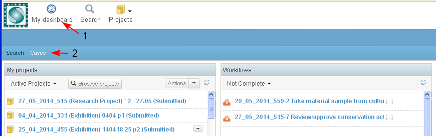
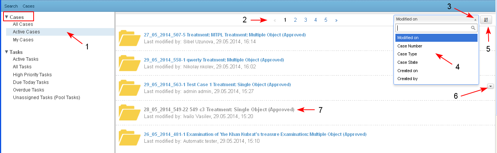
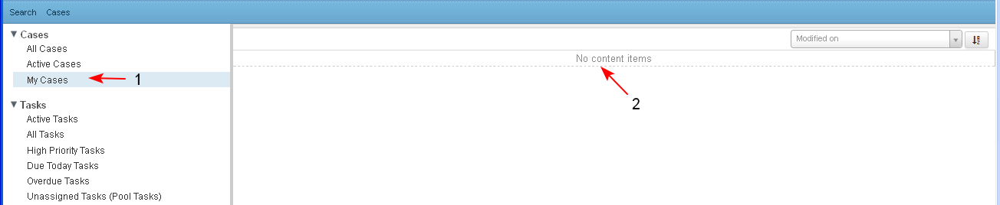

The user could use different filters which are implemented and accessible.
- The user accesses the filters via Main Menu/ Cases (1-2).

- The screen "Cases" opens:
- On the left side panel the Cases filters are visualized and may be selected by the user.
- All Cases - the filter shows all cases, in all states to which the user has access.
- Active Cases (1) - the filter is loaded by default, showing all cases in state different from "Closed", "Archived" or "Deleted" to which the user has access.
- My Cases - the filter shows all cases that the user has created ( in any state), sorted by date, the recent are on top.
- The list of cases is paginated (2). The cases are sorted by date and time of last modification, the most recent are on top. There are other options for sorting which may be selected from a drop-down menu (3-4). The list of cases may be visualized ascending or descending (5).
- If the current user has permissions to perform actions on a case - the available actions may be seen in the corresponding list (6).
- For each case in the list the following data is displayed: case ID, case Type,case State, Last Modified by - user name, date and time. The case ID, case Type,case State are a direct link to open the corresponding case dashboard.
- There is no direct link to cases for which the current user has no access (7).
- On the left side panel the Cases filters are visualized and may be selected by the user.

- If the system does not find results for a given filter (1) for the currant user, than a message is displayed: "No content items" (2).
